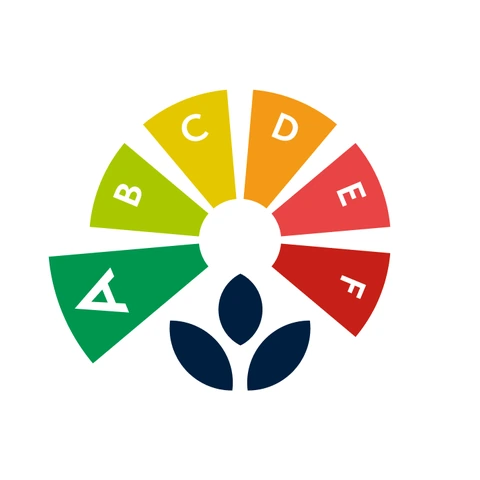

Come si legge il bollino
Il bollino MAMMA indica quanta protezione climatica ha ricevuto un prodotto, dalla semina alla raccolta. Dal 1° marzo 2037 è obbligatorio su tutti i prodotti ortofrutticoli in vendita.
Le sei classi

Classe AProtezione climatica massima Scegli una classe dall'elenco per vedere il suo bollinoLa classe non riguarda la sicurezza del prodotto, che è garantita per tutte le classi, e non dice nulla sul valore nutrizionale o sul prezzo.
Verifica un prodotto
Inserisci il codice del lotto stampato sull'etichetta, oppure inquadra il QR con il telefono.
Non troviamo questo lotto. Prova con PCH-37-1147 o TRB-37-0388.